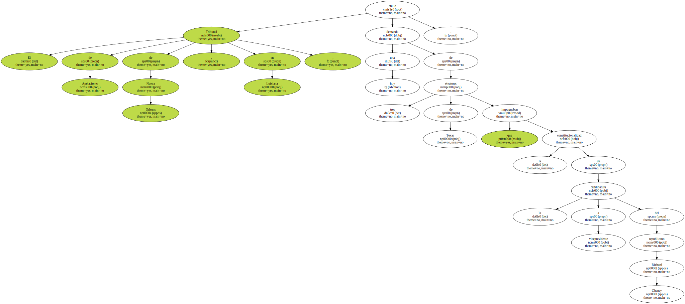
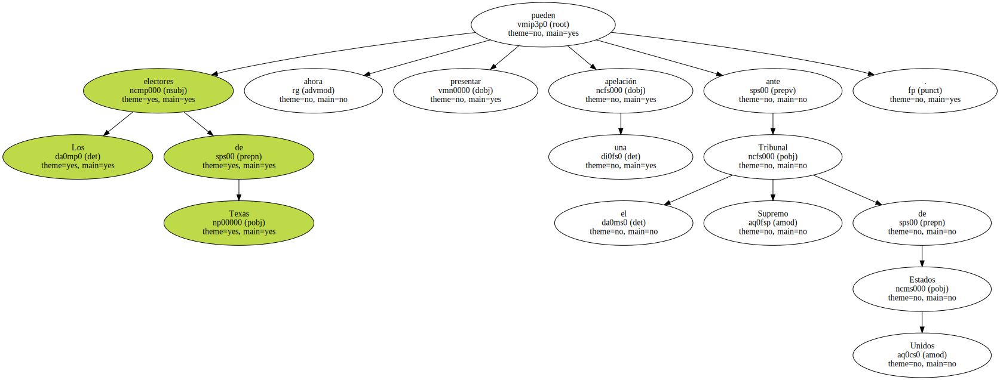
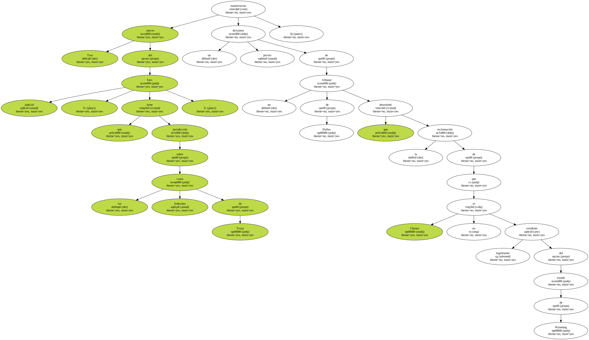
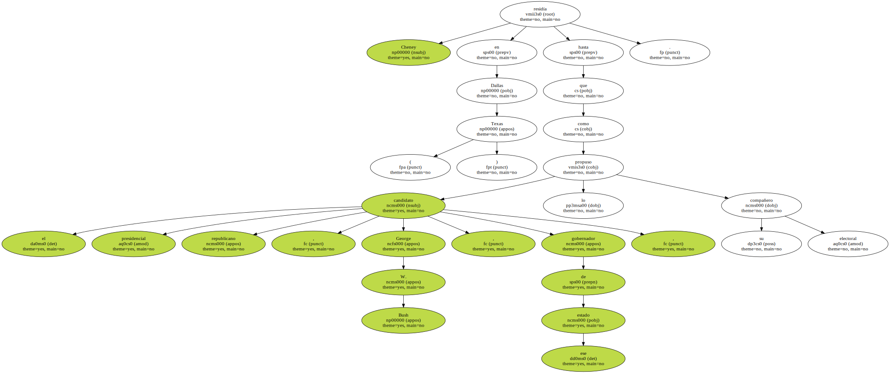
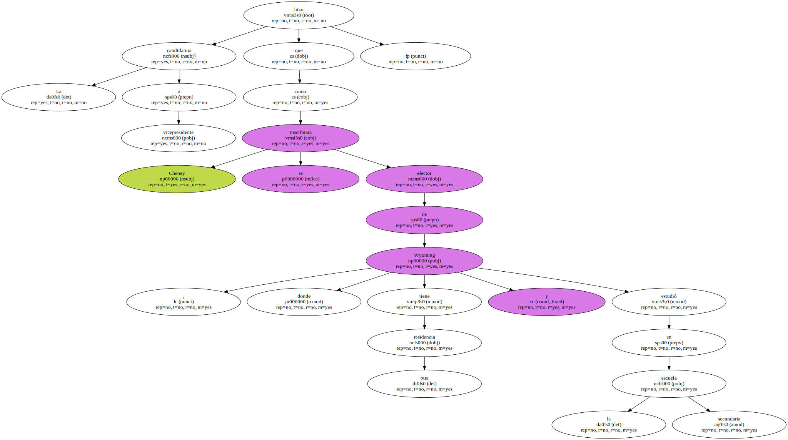
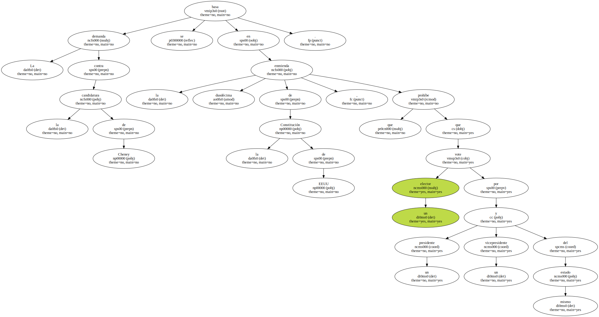
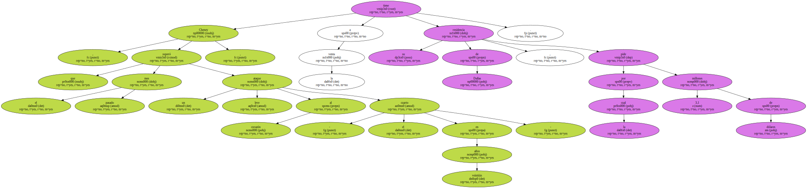

El Tribunal de Apelaciones de Nueva Orleans , en Luisiana , anuló hoy una demanda de tres electores de Texas que impugnaban la constitucionalidad de la candidatura a vicepresidente del republicano Richard Cheney.
Los electores de Texas pueden ahora presentar una apelación ante el Tribunal Supremo de Estados Unidos.
Tres jueces del foro judicial , que tiene jurisdicción sobre los casos federales de Texas , mantuvieron un dictamen previo de un tribunal de Dallas que desestimó la reclamación de que Cheney no es legalmente residente del estado de Wyoming.
Cheney residía en Dallas ( Texas ) hasta que el candidato presidencial republicano , George W. Bush , gobernador de ese estado , lo propuso como su compañero electoral.
La candidatura a vicepresidente hizo que Cheney se inscribiera como elector de Wyoming , donde tiene otra residencia y estudió en la escuela secundaria.
Cheney , ex secretario de Defensa , tiene otra vivienda en la localidad de McLean ( Virginia ) , colindante con la capital estadounidense.

La demanda contra la candidatura de Cheney se basa en la duodécima enmienda de la Constitución de EEUU , que prohíbe que un elector vote por un presidente y un vicepresidente del mismo estado.
Cheney , que el mes pasado superó un leve ataque al corazón - el cuarto en veintiún años - , tiene a la venta su residencia de Dallas , por la cual pide 3,1 millones de dólares.
